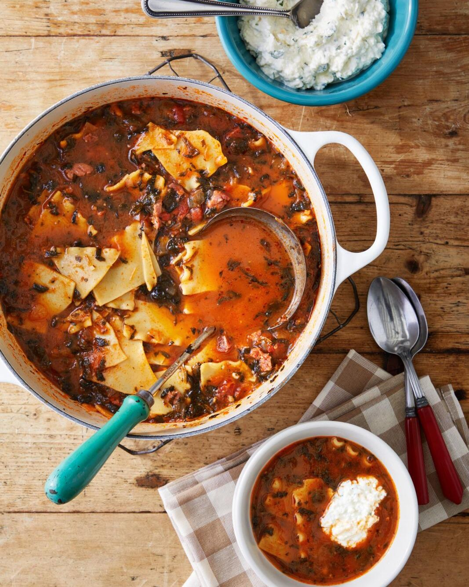

Lasagna Soup

25-minute recipe gives you all the flavor of the world's favorite casserole in the world's favorite comfort-food form!
Broken noodles simmer in a tomato broth with Italian sausage and spinach,
and the whole thing is capped off with a big dollop of blended cheese.
Ingredients
- 1 olive oil
- 1/2 yellow onion, chopped
- 1 clove garlic, chopped
- Kosher salt and freshly ground black pepper
- 1 lb. sweet sausage, casings removed
- 2 tbsp. tomato paste
- 1 tsp. dried oregano
- 1 tsp. dried basil
- 1 (24-ounce) jar marinara sauce
- 2 qt. chicken stock
- 8 oz. (about 10) lasagna noodles, broken into bite-size pieces
- 1 (10-ounce) package frozen chopped spinach, thawed or broken into chunks
- 1 1/4 c. ricotta
- 4 oz. mozzarella, grated, (about 1 cup)
- 2 oz. Pecorino, grated (about 1/2 cup)
Steps
- Heat oil in a large Dutch oven or pot over medium heat. Add onion and garlic.
Season with salt and pepper. Cook, stirring occasionally, until softened, 4 to 6 minutes.
Add sausage and cook, breaking it into pieces, until browned, 5 to 7 minutes. Add tomato paste, oregano, and basil,
and cook, stirring,
1 minute. Add marinara and stock; bring to a boil.
Add noodles and spinach. Cook until noodles are soft, 10 to 12 minutes.
-
Meanwhile, combine ricotta, mozzarella, and Pecorino in a bowl.
Serve soup with 1 to 2 dollops of cheese mixture on top.